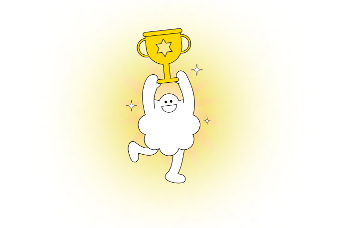

수술 후 한달 째
수술 후 첫진료
수술전 검사
김O빛님이 받으신

자이스(ZEISS)의 비쥬800 장비를 사용하는 수술로,
현존하는 레이저수술 중 레이저 조사시간이 가장 짧고
최소 절개로 진행되는 혁신적 시력교정 수술로
일상 복귀가 빠르고 부작용이 적어요.
수술시간
일상회복
수술후관리
각막 보존율
맞춤형 정밀 검사로 나에게 딱 맞는
시력교정 방법을 찾아보세요.
강남역 9번출구 GT타워 지하 2층
평일 09:30 ~ 18:00
토요일 09:30 ~ 17:00
© 2025 B&VIT EYE CENTER. ALL RIGHTS RESERVED.